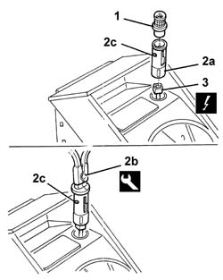

7065C72 FRONT CIGAR LIGHTER SOCKET/POWER POINT - FASTEN
- Path
- Procedures > 70 FITTINGS > 7065 SEAT BELTS AND ACCESSORIES > 7065C ACCESSORIES AND DECORATIONS > 7065C72 FRONT CIGAR LIGHTER SOCKET/POWER POINT - FASTEN
- Kind
- repair procedure (removal / refitting; the operation number is the code)
- Applies to
- all engines; all production periods
- Interactive page
- https://sloeber94.github.io/elrnDB-aGt/en/#/125002002
Applies to: all engines; all production periods
 Removing
Removing
 Refitting
RefittingOp. 7045A10 L/H OR R/H FRONT SEAT (ONE) - R+R
(right and left)
Op. 7040A65 PASSENGER COMPARTMENT BOX LOCK , ONE , R R
(right and left)
Op. 3380A44 HANDBRAKE/LINKAGE PROTECTION - R+R
Op. 7045B18 FRONT SEAT ARM REST
Op. 7040L28 TUNNEL SWITCH PANEL - R R
1. Take out the ashtray.
2. Withdraw the cigarette lighter seating (2a) using the special tool (2b).
 | Name | Country |
|---|---|---|
2b | Pliers | 1.823.028.000 |
3. Disconnect the electrical connection.
Name | Connector | |
|---|---|---|
3 | Cigarette lighter/power socket | See P50 CIGARETTE LIGHTER/POWER SOCKET ( CONNECTORS ) |

Applies to: all engines; all production periods
Refitting
RemovingCheck that the cigarette lighter seating is undamaged.
Connect the electrical connection.
Fit the cigar lighter housing.
Op. 7040L28 TUNNEL SWITCH PANEL - R R
Op. 7045B18 FRONT SEAT ARM REST
Op. 3380A44 HANDBRAKE/LINKAGE PROTECTION - R+R
Op. 7040A65 PASSENGER COMPARTMENT BOX LOCK , ONE , R R
(right and left)
Op. 7045A10 L/H OR R/H FRONT SEAT (ONE) - R+R
(right and left)
Check that the cigarette lighter is working.
Topics linked from this page (6)
- 3380A44 HANDBRAKE/LINKAGE PROTECTION - R+R
- 7040A65 PASSENGER COMPARTMENT BOX LOCK , ONE , R R
- 7040L20 TUNNEL TRIM - R R
- 7040L28 TUNNEL SWITCH PANEL - R R
- 7045A10 L/H OR R/H FRONT SEAT (ONE) - R+R
- 7045B18 FRONT SEAT ARM REST